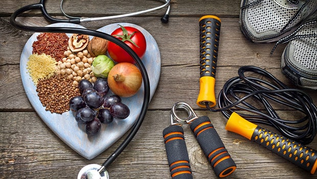

Exercise: Low-impact exercises such as walking, swimming, and cycling can help improve circulation and reduce the risk of aneurysm rupture.
Diet: Foods high in potassium such as bananas, oranges, potatoes, and leafy greens can help lower blood pressure and reduce the risk of aneurysm rupture. Foods high in fiber such as whole grains, beans, and legumes can help lower cholesterol levels and improve digestion.

Abdominal aortic aneurysm
Acute native valve endocarditis
Exercise: Low-intensity exercises such as walking, yoga, or tai chi can help improve heart health and overall wellness.
Diet: A low-sodium diet can help manage fluid buildup and reduce strain on the heart. This can include avoiding processed and packaged foods, and using herbs and spices to flavor food instead of salt. Foods high in vitamin C such as citrus fruits, berries, kiwi, and tomatoes can help boost the immune system and promote healing.
Acute pericarditis
Exercise: Light stretching and gentle yoga can help manage inflammation and symptoms.
Diet: Anti-inflammatory foods such as fatty fish (salmon, tuna), nuts (almonds, walnuts), seeds (flaxseeds, chia seeds), whole grains (brown rice, quinoa), and leafy greens (spinach, kale) can help manage inflammation and symptoms. Foods high in antioxidants such as berries, grapes, cherries, and dark chocolate can help reduce oxidative stress and promote healing.
Aortic stenosis
Exercise: Light cardio exercises such as walking, swimming, and cycling can help improve heart health and overall wellness.
Diet: Foods low in saturated and trans fats such as lean proteins (chicken, fish, tofu), whole grains, fruits, and vegetables can help manage risk factors such as high blood pressure and high cholesterol. Foods high in antioxidants such as berries, grapes, cherries, and dark chocolate can help protect the heart from oxidative stress.
Thoracoabdominal aortic aneurysm
Exercise: Low-intensity exercises such as walking, yoga, or tai chi can help improve heart health and overall wellness.
Diet: A low-sodium diet can help manage fluid buildup and reduce strain on the heart. This can include avoiding processed and packaged foods, and using herbs and spices to flavor food instead of salt. Foods high in lean protein such as chicken, fish, and tofu can help build and repair tissue and maintain muscle mass.
Hypertrophic cardiomyopathy
Exercise: Low-intensity exercises such as walking, yoga, or tai chi can help improve heart health and overall wellness.
Diet: Foods low in saturated and trans fats such as lean proteins (chicken, fish, tofu), whole grains, fruits, and vegetables can help manage risk factors such